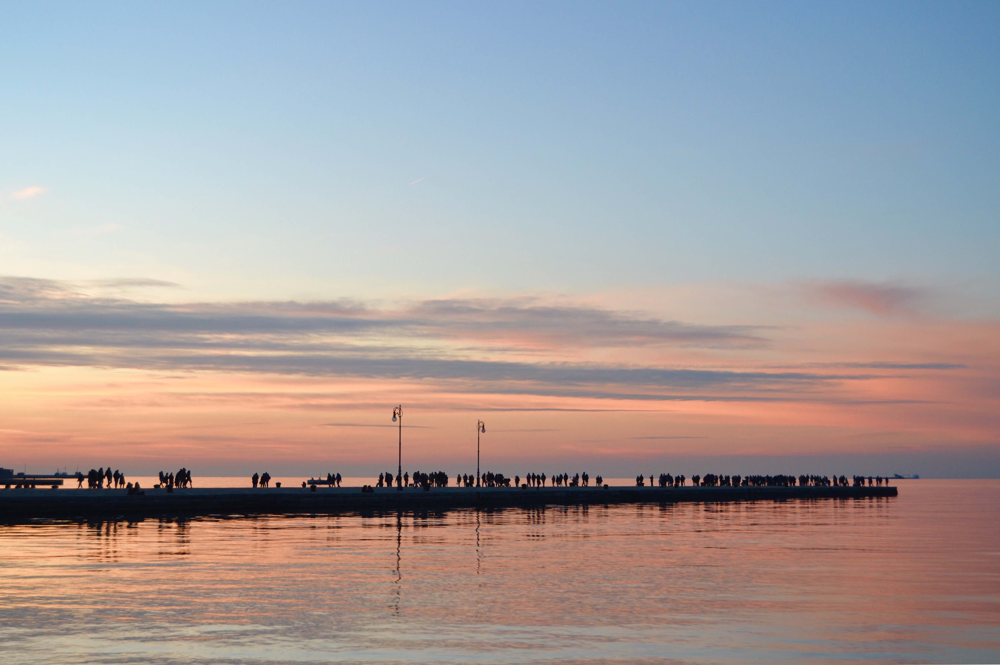

Gin & Zano presentano:
Punk Rock Wedding
Tour Dates
Sala Matrimoni
#1 Comune di Muggia
 San Francisco è una...
San Francisco è una popolare meta di molti turisti internazionali, ed è conosciuta per le sue ripide colline, per la sua vivacità culturale e il suo eclettismo architettonico, per i suoi famosi paesaggi, incluso il Golden Gate Bridge, per i suoi tram, per Alcatraz e per Chinatown.
#2 San Francisco
San Francisco è una...
San Francisco è una popolare meta di molti turisti internazionali, ed è conosciuta per le sue ripide colline, per la sua vivacità culturale e il suo eclettismo architettonico, per i suoi famosi paesaggi, incluso il Golden Gate Bridge, per i suoi tram, per Alcatraz e per Chinatown.
#2 San Francisco
 Il parco...
Il parco, al cui interno si sviluppa la Yosemite Valley, è uno dei più frequentati degli Stati Uniti, visitato ogni anno da più di 5 milioni di persone, essendo ricco di straordinarie bellezze naturali, costellato di altissime rupi, cascate spettacolari, alberi giganti e torrenti.
#3 Yosemite Park
Il parco...
Il parco, al cui interno si sviluppa la Yosemite Valley, è uno dei più frequentati degli Stati Uniti, visitato ogni anno da più di 5 milioni di persone, essendo ricco di straordinarie bellezze naturali, costellato di altissime rupi, cascate spettacolari, alberi giganti e torrenti.
#3 Yosemite Park
 I punti notevoli...
I punti notevoli della Valle della Morte sono Dante's View che domina la valle, Zabriskie Point molto spettacolare specialmente alle cinque di mattina, Stovepipe Wells, dove ci sono ancora i carri abbandonati dai fortyniner e le dune di sabbia, Ubehebe Crater, il cratere di un vulcano spento, e Rhyolite, una città fantasma che sta scomparendo.
#4 Death Valley
I punti notevoli...
I punti notevoli della Valle della Morte sono Dante's View che domina la valle, Zabriskie Point molto spettacolare specialmente alle cinque di mattina, Stovepipe Wells, dove ci sono ancora i carri abbandonati dai fortyniner e le dune di sabbia, Ubehebe Crater, il cratere di un vulcano spento, e Rhyolite, una città fantasma che sta scomparendo.
#4 Death Valley
 La città è famosa per...
La città è famosa per essere la capitale del divertimento, dello shopping e del gioco d'azzardo. Molti casinò "storici" sono stati fondati da imprese collegate a organizzazioni criminali. Personaggi legati alla criminalità organizzata, come Bugsy Siegel, hanno contribuito alla creazione della "capitale del gioco d'azzardo" e sono parte integrante della leggenda cittadina.
#5 Las Vegas
La città è famosa per...
La città è famosa per essere la capitale del divertimento, dello shopping e del gioco d'azzardo. Molti casinò "storici" sono stati fondati da imprese collegate a organizzazioni criminali. Personaggi legati alla criminalità organizzata, come Bugsy Siegel, hanno contribuito alla creazione della "capitale del gioco d'azzardo" e sono parte integrante della leggenda cittadina.
#5 Las Vegas
 Quasi due miliardi...
Quasi due miliardi di anni della storia della Terra sono emersi alla luce grazie all'azione del fiume Colorado e dei suoi affluenti, che in milioni di anni hanno eroso le rocce strato dopo strato, unita al sollevamento del Colorado Plateau.
#6 Grand Canyon
Quasi due miliardi...
Quasi due miliardi di anni della storia della Terra sono emersi alla luce grazie all'azione del fiume Colorado e dei suoi affluenti, che in milioni di anni hanno eroso le rocce strato dopo strato, unita al sollevamento del Colorado Plateau.
#6 Grand Canyon
 L'Arizona Route 66...
L'Arizona Route 66 Museum si trova nella storica Centrale Elettrica di Kingman, AZ. Qui potete scoprire l'evoluzione dei viaggi sul 35o Parallelo, che divenne negli anni la Route 66.
#7 Kingman
L'Arizona Route 66...
L'Arizona Route 66 Museum si trova nella storica Centrale Elettrica di Kingman, AZ. Qui potete scoprire l'evoluzione dei viaggi sul 35o Parallelo, che divenne negli anni la Route 66.
#7 Kingman
 Chilometri e chilometri...
Chilometri e chilometri di spiagge si estendono lungo la costa, da La Jolla a Chula Vista, passando per la penisola del Coronado; le due spiagge a nord, Ocean Beach e Pacific Beach sono le più animate con numerose strutture per il surf, gli sport acquatici e i divertimenti diurni e notturni.
#8 San Diego
Chilometri e chilometri...
Chilometri e chilometri di spiagge si estendono lungo la costa, da La Jolla a Chula Vista, passando per la penisola del Coronado; le due spiagge a nord, Ocean Beach e Pacific Beach sono le più animate con numerose strutture per il surf, gli sport acquatici e i divertimenti diurni e notturni.
#8 San Diego
 Le attrazioni più note...
Le attrazioni più note di Los Angeles sono, oltre alle lunghe spiagge del Pacifico, il quartiere di Hollywood, i negozi di Rodeo Drive, il centro commerciale The Grove e le ville dei divi dello spettacolo a Beverly Hills, Bel Air e Malibù e i parchi tematici di Disneyland, Universal Studios e Paramount.
#9 Los Angeles
Le attrazioni più note...
Le attrazioni più note di Los Angeles sono, oltre alle lunghe spiagge del Pacifico, il quartiere di Hollywood, i negozi di Rodeo Drive, il centro commerciale The Grove e le ville dei divi dello spettacolo a Beverly Hills, Bel Air e Malibù e i parchi tematici di Disneyland, Universal Studios e Paramount.
#9 Los Angeles
 Visita una spiaggia diversa...
Visita una spiaggia diversa ogni giorno dell'anno! Turisti e celebrità si radunano in questa soleggiata isola caraibica per esplorarne le attività, i tour e le attrazioni in un'estate che dura 365 giorni l'anno.
#10 Antigua
Visita una spiaggia diversa...
Visita una spiaggia diversa ogni giorno dell'anno! Turisti e celebrità si radunano in questa soleggiata isola caraibica per esplorarne le attività, i tour e le attrazioni in un'estate che dura 365 giorni l'anno.
#10 Antigua

Home sweet home!
#11 Trieste